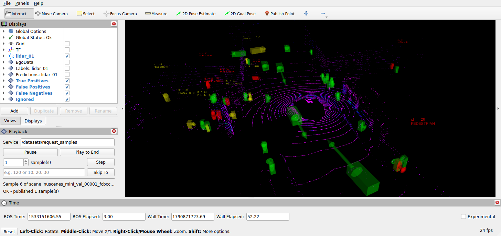

This repository is part of the Autonomy.Benchmarks suite of the Autonomy.Hub Ecosystem
Within the Autonomy.Benchmarks suite, Autonomy.Evaluation generates the metrics-based evidence for benchmarking automated driving deployments. It evaluates arbitrary ROS systems under test, either from their own topics alone, e.g. a closed-loop planner by its time to collision, or against ground truth, e.g. a perception algorithm against the labels of a dataset replayed by Autonomy.Datasets, and reports the resulting metrics per scene and over all evaluated samples:
- 🔄 Unified ROS 2 Interface: Evaluate any ROS system under test, on datasets, in simulation or live, using the benefits of the ROS 2 ecosystem
- 🧩 Pluggable Evaluations: Select an evaluation by name, or bring your own from another package, reading any topics as inputs and, where needed, ground truth
- 📊 Established Metrics: Use the provided evaluations, which follow the metrics of established benchmarks, with Autonomy.Datasets across different datasets and automated driving tasks
- ⚡ Efficient Data Pipeline: Works seamlessly with preprocessed Rosbag files from Autonomy.Datasets for fast execution during development
- 🐳 Dockerized Environment: Reproducible setup with all dependencies included
- 🔌 Modular Architecture: Easy integration with other ROS 2 packages
Supported Evaluations
This repository supports evaluations of various automated driving tasks.
Detailed metric definitions and computation notes are documented in docs/IMPLEMENTATION.md.
Contributions adding more evaluations are welcome
| Evaluation | Datasets | Task | Preview |
|---|---|---|---|
| 3D Object Detection | All Autonomy.Datasets with 3D object labels | 3D bounding box detection on the classes of perception_msgs/ObjectClassification |  |
🚀 Quick Start • 💻 Development • 📝 Documentation
🚀 Quick Start
Clone autonomy_datasets and follow its setup instructions to prepare your dataset.
Use the provided docker-compose.yml to start the full pipeline — dataset publisher, system under test, and evaluation node:
Configure the evaluation and dataset via ROS launch arguments in docker-compose.yml:
The evaluation node requests the samples it evaluates from the dataset node via its request_samples service, which publishes them and responds once they have been published. The dataset therefore publishes the next sample only once the system under test has processed the current one. As soon as all samples have been published, the node aggregates its metrics per scene of the dataset and over all evaluated samples. To evaluate samples published by others instead, e.g. by a closed-loop simulation, set sample_source:=external. See the node documentation for the topics of the evaluations, the sample settings and the results.
💻 Development
Set up Development Environment
- Clone the repository. git clone https://github.com/thinking-cars/autonomy_evaluation.git
- Initialize the
.openads-dev-environmentsubmodule containing development environment configuration.cd autonomy_evaluationgit submodule update --init --recursive
- Open the repository in Visual Studio Code. code .
- Install the recommended VS Code extensions.
Ctrl+Shift+P / Extensions: Show Recommended Extensions / Install Workspace Recommended Extensions (Cloud Download Icon)
- Reopen the repository in a Dev Container. Ctrl+Shift+P / Dev Containers: Rebuild and Reopen in Container
Build
Ctrl+Shift+B
Run Tests
Ctrl+Shift+P / Tasks: Run Test Task
📝 Documentation
Package and node interfaces are documented in the respective package READMEs listed below. Implementation details are found in the Source Code Documentation.
| Package | Description |
|---|---|
| autonomy_evaluation | Metrics-based evaluation of automated driving modules, generating the evidence for benchmarking automated driving deployments |
⚖️ Licensing
The source code in this repository is licensed under Apache-2.0, see [LICENSE](LICENSE). Container images provided by this repository may contain third-party software shipped with their own license terms.
🙏 Acknowledgements
This project is maintained by Thinking Cars. We appreciate contributions and are happy to discuss potential collaborations.